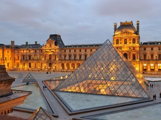
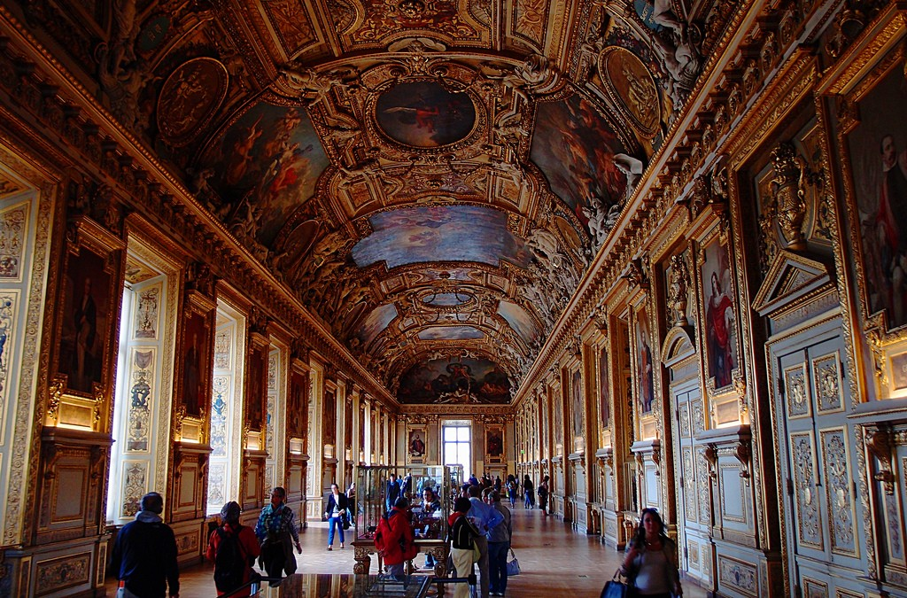
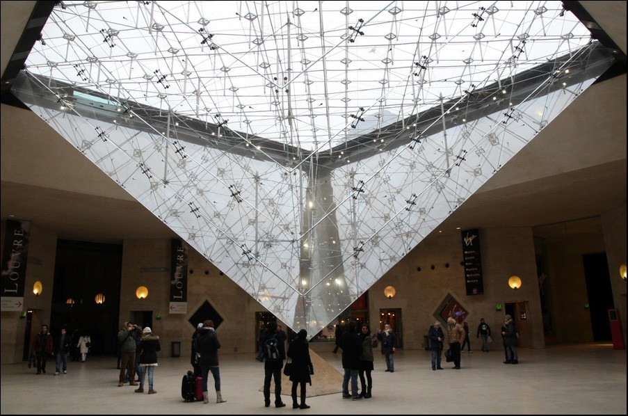
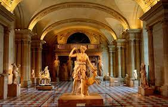
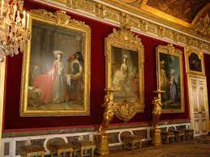
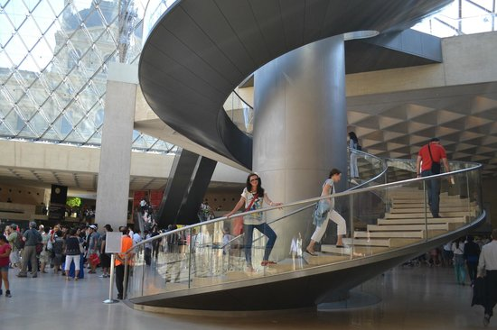

Вважають, що колись на цьому місті був військовий табір франків, що намагались захопити стародавнє галло-римське місто Лютеція. Перша письмова згадка про Лувр віднайдена в письмовому джерелі за 1204 рік, де сповіщається про Вежу-донжон. Вежу побудували ще за короля Філіппа ІІ Августа у 1190 році. У 1317 році сюди перевезли королівську скарбницю. Стару вежу Лувра зруйнували за наказом короля Франциска І у 1528 році. Франциск першим почав широко колекціонувати твори мистецтва і запрошувати на службу у Францію митців з Італії і Нідерландів. Мистецькі збірки тоді розмістили не в Луврі, а в замку Фонтенбло, улюбленій резиденції монарха. Майстерні Фонтенбло були справжньою академією по вихованню майстрів і створенню творів мистецтва доби Відродження і маньєризму. Шедеври школи Фонтенбло пізніше розійшлися світом від Нью-Йорка до Москви як визначні твори 16 століття.Створення королівської резиденції в Луврі розпочали у 1546 році (архітектор П'єр Леско). Квадратний двір палацу створили архітектори Жак Лемерсьє, а наприкінці 17 століття добудував Луї Лево. Лувр ставав конгломератом різностильових споруд від доби відродження до класицизму (східна Колонада Лувру, архітектор Клод Перро). Будівельні роботи припинилися за короля Луї XIV, що переніс королівську резиденцію в улюблений Версаль. Приміщення палацу використовували як майстерні і житло художників, крамнички ремісників, облаштували друкарню тощо. Порожніх приміщень було стільки, що в Луврі розмістилася Королівська Академія живопису і скульптури.З 1725 року сюди перевели щорічні виставки художників. Від назви Квадратний салон палацу Лувр походить і назва виставок Паризький салон, що здобули світову славу.Проте палац Лувр почав занепадати. У 1750 році його навіть запропонували зруйнувати. Пожвавлення прийшло несподівано в роки французької революції 1789—1793 рр., що врятувало колишній королівський палац від руйнацій.




| Информация о музее | Фотки музея |
| qweqwe | qweqweqwe2 |
| qweqwe2 | |
| qweqwe2 | |
| qweqwe2 |